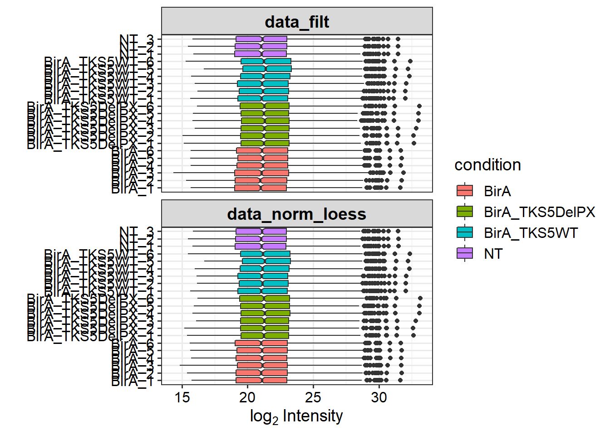

Kolokvium
Peter Manik
30/05/2022
Last updated: 2022-06-01
Checks: 7 0
Knit directory: Kolokvium_final/
This reproducible R Markdown analysis was created with workflowr (version 1.7.0). The Checks tab describes the reproducibility checks that were applied when the results were created. The Past versions tab lists the development history.
Great! Since the R Markdown file has been committed to the Git repository, you know the exact version of the code that produced these results.
Great job! The global environment was empty. Objects defined in the global environment can affect the analysis in your R Markdown file in unknown ways. For reproduciblity it’s best to always run the code in an empty environment.
The command set.seed(20220601) was run prior to running the code in the R Markdown file. Setting a seed ensures that any results that rely on randomness, e.g. subsampling or permutations, are reproducible.
Great job! Recording the operating system, R version, and package versions is critical for reproducibility.
Nice! There were no cached chunks for this analysis, so you can be confident that you successfully produced the results during this run.
Great job! Using relative paths to the files within your workflowr project makes it easier to run your code on other machines.
Great! You are using Git for version control. Tracking code development and connecting the code version to the results is critical for reproducibility.
The results in this page were generated with repository version a0c6547. See the Past versions tab to see a history of the changes made to the R Markdown and HTML files.
Note that you need to be careful to ensure that all relevant files for the analysis have been committed to Git prior to generating the results (you can use wflow_publish or wflow_git_commit). workflowr only checks the R Markdown file, but you know if there are other scripts or data files that it depends on. Below is the status of the Git repository when the results were generated:
Untracked files:
Untracked: data/kolokvium_PXD015847_proteinGroups.txt
Note that any generated files, e.g. HTML, png, CSS, etc., are not included in this status report because it is ok for generated content to have uncommitted changes.
These are the previous versions of the repository in which changes were made to the R Markdown (analysis/kolokvium_manik.Rmd) and HTML (docs/kolokvium_manik.html) files. If you’ve configured a remote Git repository (see ?wflow_git_remote), click on the hyperlinks in the table below to view the files as they were in that past version.
| File | Version | Author | Date | Message |
|---|---|---|---|---|
| Rmd | a0c6547 | manikpeter | 2022-06-01 | wflow_publish(c("analysis/about.Rmd", "analysis/index.Rmd", "analysis/license.Rmd", |
Introduction

BirA was fused with the invadopodia-specific protein Tks5α and mutant which lacked the membrane-targeting PX domain (Tks5β). After addition of biotin, both fusion proteins biotinylated proteins in their vicinity. Biotinylated proteins were isolated by affinity capture and identified by mass spectrometry.
Load libraries
- here (path definitions)
- DEP (proteomics workflow)
- dplyr (basic data operations)
- SummarizedExperiment (normalization purposes)
- DT (output table generation)
- ggplot2 (correlation plot)
- gprofiler2; enrichR (GSEA)
library(ggplot2)
library(ggrepel)
library(enrichR)
library(gprofiler2)
library(here)
library(DEP)
library(dplyr)
library(DT)
library(SummarizedExperiment)Data input
As input, we start with kolokvium_PXD015847_proteinGroups.txt file, generated by MaxQuant software. We load it as dataframe and look at its parameters.
data <- read.delim(here("data","kolokvium_PXD015847_proteinGroups.txt"))
dim(data)[1] 1158 224Data preparation
Contaminants filtering
We will filter out the most common contaminants:
- Reverse sequences
- Only identified by site proteins
- cRAP protein sequences (e.g common laboratory proteins, proteins added accidentally by dust/physical contact, etc.)
- keratins
By change of nrow() value you can see how many proteins were filtered out.
data <- data %>%
filter(Reverse != "+") %>%
filter(!grepl("cRAP", Majority.protein.IDs)) %>%
filter(Only.identified.by.site != "+") %>%
filter(!grepl("keratin", Fasta.headers)) %>%
filter(!grepl("Keratin", Fasta.headers)) %>%
filter(!grepl("PE=5", Fasta.headers))
nrow(data)[1] 10971158 proteins identified before filtering -> 1097 proteins after filtering
Unique identifiers
To evaluate abundance of proteins, each protein must have unique identifier (protein name/ ID)
# Are there any duplicated gene names?
data$Gene.names %>% duplicated() %>% any()[1] TRUE# Make a table of duplicated gene names
data %>% group_by(Gene.names) %>% summarize(frequency = n()) %>%
arrange(desc(frequency)) %>% filter(frequency > 1)# A tibble: 1 x 2
Gene.names frequency
<chr> <int>
1 "" 1414 proteins are without name we should assign protein_id as their name.
We create new column “name” containing protein names or protein_id if protein does not have a name.
Now we have 0 proteins without a name :)
# Make unique names using the annotation in the "Gene.names" column as primary names and the annotation in "Protein.IDs" as name for those that do not have an gene name.
data_unique <- make_unique(data, "Gene.names", "Protein.IDs", delim = ";")
data_unique %>% group_by(name) %>% summarize(frequency = n()) %>%
arrange(desc(frequency)) %>% filter(frequency > 1)# A tibble: 0 x 2
# ... with 2 variables: name <chr>, frequency <int>SummarizedExperiment
Dataframe is transformed to SummarizedExperiment object for downstream analyses.
LFQ was chosen for calculation of protein abundance. Names of samples and conditions were extracted from colnames using gsub + regex
intensity_columns <- grep("LFQ.", colnames(data_unique))
# create experimental design
label_columns <- grep("Peptides.", colnames(data_unique))
label_row_names <- colnames(data_unique)[label_columns]
labels <- gsub("^Peptides.","",label_row_names)
condition <- gsub("_[a-c]$","",gsub("^[0-9]_","",labels))
exp_design <- data.frame(
label = labels,
condition = condition,
replicate = c(rep(1:3, times = 3),rep(4:6, times = 3),c(1:3))
)
# Define the variable types
exp_design$label <- as.character(exp_design$label)
exp_design$condition <- as.character(exp_design$condition)
exp_design$replicate <- as.numeric(exp_design$replicate)
#create SummarizedExperiment object
data_se <- make_se(data_unique, intensity_columns, exp_design)Number of proteins identified in each sample
We expect similar number of proteins identified in condition between replicates. NT does not contain Biotin ligase- I would expect less proteins identified there.
# plot identifications per each condition
plot_numbers(data_se)Data filtering
Firstly, we plot a barplot of the protein identification overlap between samples. Most of the proteins were present in all of the samples.
plot_frequency(data_se)Mild filtering parameters - protein is counted if it was identified in at least 2 replicates.
data_filt <- filter_missval(data_se, thr = 1)
plot_numbers(data_filt)plot_frequency(data_filt)Normalization
LoessF normalization
data_norm_loess <- data_filt
assay(data_norm_loess)<-limma::normalizeCyclicLoess(assay(data_norm_loess))
meanSdPlot(data_norm_loess)plot_normalization(data_filt, data_norm_loess)
Imputation of NAs
BioID data often contain lots of missing values in control, these need to be imputed for downstream statistical analysis. Since 0s in this context represent proteins not biotinylated in Neg CTRL it is type MNAR.
- MNAR: proteins below detection limit, low abundance proteins
Various methods available for MNAR imputation I chose MinProb
- MinProb: imputation by random draws from a Gaussian distribution centered to a minimal value (q-th quantile (5% quantile used)
Heatmap of missing proteins in at least 1 condition (white = NA; black = present)
plot_missval(data_norm_loess)Plot intensity distributions and cumulative fraction of proteins with and without missing values
plot_detect(data_norm_loess)Impute the missing values
data_imp <- impute(data_norm_loess,fun = "MinProb", q = 0.05)[1] 0.3216465plot_imputation(data_norm_loess, data_imp)Plot PCA for 500 most variable proteins on Y axis variation between biological replicates can be observed (remember 1-3 are technical replicates so 1-3 = 1.BR, 4-6 = 2.BR). X axis represent biological variance - variance caused by specific biotinylation by fusion proteins (NT, BirA, TKS_WT, TKS_del)
plot_pca(data_imp, x = 1, y = 2, n = 500, point_size = 4)Differential expression
Only BirA used as control in this step because: a) NT is similar to BirA according to PCA b) it is more suitable control (identifies non-specifically biotinylated proteins). Alternatively I could merge BirA with NT and used that as a control. Difference between WT and MUT version of TKS5 was also tested.
# Test every sample versus control
data_diff <- test_diff(data_imp, type = "control", control = "BirA")
# Test manually defined comparisons
data_diff_manual <- test_diff(data_imp, type = "manual",
test = "BirA_TKS5WT_vs_BirA_TKS5DelPX")We need to correct for multiple testing and set cutoffs for calling a protein differentially expressed:
- logFC -> 1
- adjusted p-value -> 0.05
dep <- add_rejections(data_diff, alpha = 0.05, lfc = log2(1))
dep_manual <- add_rejections(data_diff_manual, alpha = 0.05, lfc = log2(1))Data visualization
Correlation of significantly enriched proteins between samples. Technical replicates are identical, biological are highly similar. As expected both proteins have similar sets of identified proteins in comparison to control samples (NT; CTRL).
# Plot the Pearson correlation matrix
plot_cor(dep, significant = TRUE, lower = 0, upper = 1, pal = "Blues")GSEA
WT vs BirA - I expect enrichment of cytoskeleton/ plasma membrane in GO:CC.
Indeed these categories are one of the top hits.
data_results <- get_results(dep)
gostplot(gost(query = c(data_results$name[data_results$BirA_TKS5WT_vs_BirA_significant & data_results$BirA_TKS5WT_vs_BirA_ratio > 0])), capped = F, interactive= T)Volcano plots
BirA_TKS5WT_vs_BirA_TKS5DelPX
Several interacting partners are lost after deletion of specific domain from TKS5, including FGD1, RNT4, MAP4 and EIF4A3.
plot_volcano(dep_manual, contrast = "BirA_TKS5WT_vs_BirA_TKS5DelPX", label_size = 2, add_names = TRUE, adjusted = TRUE)Barplots of single proteins
These 2 proteins are enriched only in WT TKS5 but not in mutated form:
plot_single(dep, proteins = c("FGD1","MAP4"), type = "centered")FGD1 and TKS5 have known function in the formaiton of invadopodia:

SessionInfo()
sessionInfo()R version 4.1.3 (2022-03-10)
Platform: x86_64-w64-mingw32/x64 (64-bit)
Running under: Windows 10 x64 (build 22000)
Matrix products: default
locale:
[1] LC_COLLATE=English_United Kingdom.1252
[2] LC_CTYPE=English_United Kingdom.1252
[3] LC_MONETARY=English_United Kingdom.1252
[4] LC_NUMERIC=C
[5] LC_TIME=English_United Kingdom.1252
attached base packages:
[1] stats4 stats graphics grDevices utils datasets methods
[8] base
other attached packages:
[1] SummarizedExperiment_1.24.0 Biobase_2.54.0
[3] GenomicRanges_1.46.1 GenomeInfoDb_1.30.1
[5] IRanges_2.28.0 S4Vectors_0.32.4
[7] BiocGenerics_0.40.0 MatrixGenerics_1.6.0
[9] matrixStats_0.62.0 DT_0.23
[11] dplyr_1.0.9 DEP_1.16.0
[13] here_1.0.1 gprofiler2_0.2.1
[15] enrichR_3.0 ggrepel_0.9.1
[17] ggplot2_3.3.6 workflowr_1.7.0
loaded via a namespace (and not attached):
[1] circlize_0.4.15 plyr_1.8.7 gmm_1.6-6
[4] lazyeval_0.2.2 shinydashboard_0.7.2 crosstalk_1.2.0
[7] BiocParallel_1.28.3 digest_0.6.29 foreach_1.5.2
[10] htmltools_0.5.2 fansi_1.0.3 magrittr_2.0.3
[13] cluster_2.1.2 doParallel_1.0.17 tzdb_0.3.0
[16] limma_3.50.3 ComplexHeatmap_2.10.0 readr_2.1.2
[19] imputeLCMD_2.0 sandwich_3.0-1 colorspace_2.0-3
[22] xfun_0.31 hexbin_1.28.2 callr_3.7.0
[25] crayon_1.5.1 RCurl_1.98-1.6 jsonlite_1.8.0
[28] impute_1.68.0 zoo_1.8-10 iterators_1.0.14
[31] glue_1.6.2 gtable_0.3.0 zlibbioc_1.40.0
[34] XVector_0.34.0 GetoptLong_1.0.5 DelayedArray_0.20.0
[37] shape_1.4.6 scales_1.2.0 vsn_3.62.0
[40] mvtnorm_1.1-3 DBI_1.1.2 Rcpp_1.0.8.3
[43] mzR_2.28.0 viridisLite_0.4.0 xtable_1.8-4
[46] clue_0.3-60 preprocessCore_1.56.0 MsCoreUtils_1.6.2
[49] htmlwidgets_1.5.4 httr_1.4.3 RColorBrewer_1.1-3
[52] ellipsis_0.3.2 farver_2.1.0 pkgconfig_2.0.3
[55] XML_3.99-0.9 sass_0.4.1 utf8_1.2.2
[58] labeling_0.4.2 tidyselect_1.1.2 rlang_1.0.2
[61] later_1.3.0 munsell_0.5.0 tools_4.1.3
[64] cli_3.2.0 generics_0.1.2 fdrtool_1.2.17
[67] evaluate_0.15 stringr_1.4.0 fastmap_1.1.0
[70] mzID_1.32.0 yaml_2.3.5 processx_3.5.3
[73] knitr_1.39 fs_1.5.2 purrr_0.3.4
[76] ncdf4_1.19 whisker_0.4 mime_0.12
[79] compiler_4.1.3 rstudioapi_0.13 plotly_4.10.0
[82] curl_4.3.2 png_0.1-7 affyio_1.64.0
[85] tibble_3.1.6 bslib_0.3.1 stringi_1.7.6
[88] highr_0.9 ps_1.7.0 MSnbase_2.20.1
[91] lattice_0.20-45 ProtGenerics_1.26.0 Matrix_1.4-0
[94] tmvtnorm_1.5 vctrs_0.4.1 pillar_1.7.0
[97] norm_1.0-10.0 lifecycle_1.0.1 BiocManager_1.30.18
[100] jquerylib_0.1.4 MALDIquant_1.21 GlobalOptions_0.1.2
[103] data.table_1.14.2 bitops_1.0-7 httpuv_1.6.5
[106] R6_2.5.1 pcaMethods_1.86.0 affy_1.72.0
[109] promises_1.2.0.1 gridExtra_2.3 codetools_0.2-18
[112] MASS_7.3-57 assertthat_0.2.1 rprojroot_2.0.3
[115] rjson_0.2.21 withr_2.5.0 GenomeInfoDbData_1.2.7
[118] parallel_4.1.3 hms_1.1.1 grid_4.1.3
[121] tidyr_1.2.0 rmarkdown_2.14 git2r_0.30.1
[124] getPass_0.2-2 shiny_1.7.1
sessionInfo()R version 4.1.3 (2022-03-10)
Platform: x86_64-w64-mingw32/x64 (64-bit)
Running under: Windows 10 x64 (build 22000)
Matrix products: default
locale:
[1] LC_COLLATE=English_United Kingdom.1252
[2] LC_CTYPE=English_United Kingdom.1252
[3] LC_MONETARY=English_United Kingdom.1252
[4] LC_NUMERIC=C
[5] LC_TIME=English_United Kingdom.1252
attached base packages:
[1] stats4 stats graphics grDevices utils datasets methods
[8] base
other attached packages:
[1] SummarizedExperiment_1.24.0 Biobase_2.54.0
[3] GenomicRanges_1.46.1 GenomeInfoDb_1.30.1
[5] IRanges_2.28.0 S4Vectors_0.32.4
[7] BiocGenerics_0.40.0 MatrixGenerics_1.6.0
[9] matrixStats_0.62.0 DT_0.23
[11] dplyr_1.0.9 DEP_1.16.0
[13] here_1.0.1 gprofiler2_0.2.1
[15] enrichR_3.0 ggrepel_0.9.1
[17] ggplot2_3.3.6 workflowr_1.7.0
loaded via a namespace (and not attached):
[1] circlize_0.4.15 plyr_1.8.7 gmm_1.6-6
[4] lazyeval_0.2.2 shinydashboard_0.7.2 crosstalk_1.2.0
[7] BiocParallel_1.28.3 digest_0.6.29 foreach_1.5.2
[10] htmltools_0.5.2 fansi_1.0.3 magrittr_2.0.3
[13] cluster_2.1.2 doParallel_1.0.17 tzdb_0.3.0
[16] limma_3.50.3 ComplexHeatmap_2.10.0 readr_2.1.2
[19] imputeLCMD_2.0 sandwich_3.0-1 colorspace_2.0-3
[22] xfun_0.31 hexbin_1.28.2 callr_3.7.0
[25] crayon_1.5.1 RCurl_1.98-1.6 jsonlite_1.8.0
[28] impute_1.68.0 zoo_1.8-10 iterators_1.0.14
[31] glue_1.6.2 gtable_0.3.0 zlibbioc_1.40.0
[34] XVector_0.34.0 GetoptLong_1.0.5 DelayedArray_0.20.0
[37] shape_1.4.6 scales_1.2.0 vsn_3.62.0
[40] mvtnorm_1.1-3 DBI_1.1.2 Rcpp_1.0.8.3
[43] mzR_2.28.0 viridisLite_0.4.0 xtable_1.8-4
[46] clue_0.3-60 preprocessCore_1.56.0 MsCoreUtils_1.6.2
[49] htmlwidgets_1.5.4 httr_1.4.3 RColorBrewer_1.1-3
[52] ellipsis_0.3.2 farver_2.1.0 pkgconfig_2.0.3
[55] XML_3.99-0.9 sass_0.4.1 utf8_1.2.2
[58] labeling_0.4.2 tidyselect_1.1.2 rlang_1.0.2
[61] later_1.3.0 munsell_0.5.0 tools_4.1.3
[64] cli_3.2.0 generics_0.1.2 fdrtool_1.2.17
[67] evaluate_0.15 stringr_1.4.0 fastmap_1.1.0
[70] mzID_1.32.0 yaml_2.3.5 processx_3.5.3
[73] knitr_1.39 fs_1.5.2 purrr_0.3.4
[76] ncdf4_1.19 whisker_0.4 mime_0.12
[79] compiler_4.1.3 rstudioapi_0.13 plotly_4.10.0
[82] curl_4.3.2 png_0.1-7 affyio_1.64.0
[85] tibble_3.1.6 bslib_0.3.1 stringi_1.7.6
[88] highr_0.9 ps_1.7.0 MSnbase_2.20.1
[91] lattice_0.20-45 ProtGenerics_1.26.0 Matrix_1.4-0
[94] tmvtnorm_1.5 vctrs_0.4.1 pillar_1.7.0
[97] norm_1.0-10.0 lifecycle_1.0.1 BiocManager_1.30.18
[100] jquerylib_0.1.4 MALDIquant_1.21 GlobalOptions_0.1.2
[103] data.table_1.14.2 bitops_1.0-7 httpuv_1.6.5
[106] R6_2.5.1 pcaMethods_1.86.0 affy_1.72.0
[109] promises_1.2.0.1 gridExtra_2.3 codetools_0.2-18
[112] MASS_7.3-57 assertthat_0.2.1 rprojroot_2.0.3
[115] rjson_0.2.21 withr_2.5.0 GenomeInfoDbData_1.2.7
[118] parallel_4.1.3 hms_1.1.1 grid_4.1.3
[121] tidyr_1.2.0 rmarkdown_2.14 git2r_0.30.1
[124] getPass_0.2-2 shiny_1.7.1